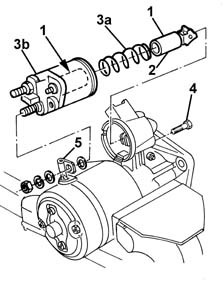

5520B18 starter motor solenoids - r+r with motor removed
- Path
- Procedures > 55 ELECTRICAL EQUIPMENT > 5520 ENGINE STARTING > 5520B starter motor and components > 5520B18 starter motor solenoids - r+r with motor removed
- Kind
- repair procedure (removal / refitting; the operation number is the code)
- Applies to
- all engines; all production periods
- Interactive page
- https://sloeber94.github.io/elrnDB-fMltpl/en/#/2891899
Applies to: all engines; all production periods
 Removing
Removing
 Refitting
RefittingFix the starter motor in a vice at the bench.
1. Disconnect the electrical supply terminal.
2. Undo the solenoid fixing bolts.
3. Remove the fixed section of the solenoid (3a) and recover the spring (3b).
4. Disconnect the moving part of the solenoid and extract it.
Applies to: all engines; all production periods
Refitting
RemovingCheck that the dismantled components are not damaged.
Clean the components with compressed air and a clean cloth. Do not use liquid detergents.
1. Lubricate the sliding surfaces of the moving parts with grease and fix the solenoid.
2. Reconnect the moving part of the solenoid.
3. Place the spring (3a) and the fixed part of the solenoid (3b) in position.
4. Tighten the bolts fixing the solenoid.
5. Connect the electrical supply terminal and remove the starter motor from the vice.
